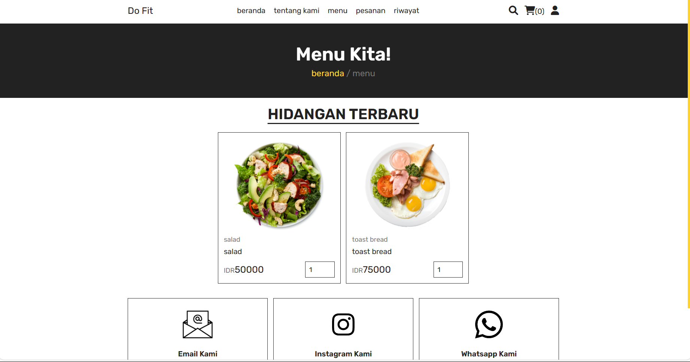
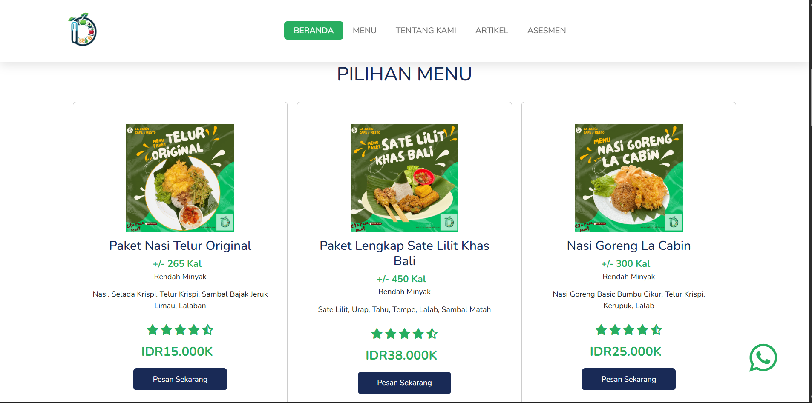
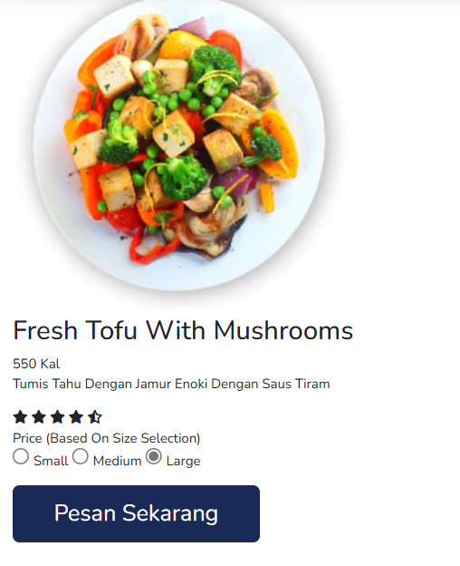
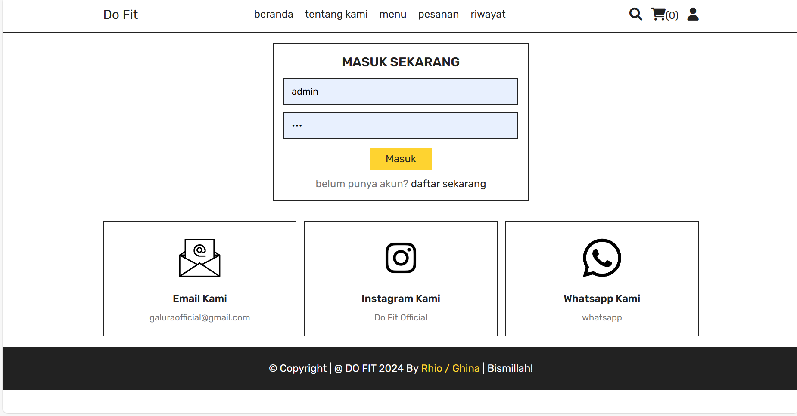
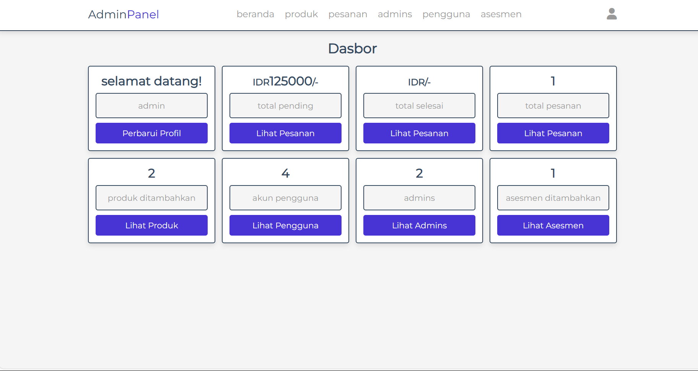

Aplikasi startup digital catering sehat dalam program Gerakan Nasional 1000 Startup Digital.
UI/UX Designer & Front-End Developer
Figma, HTML, CSS, JavaScript
6 Months
2024
do-fit merupakan aplikasi catering sehat yang dirancang untuk membantu pengguna menjaga pola makan sehat secara praktis.
Saya bertanggung jawab terhadap proses UI/UX design, wireframing, prototyping, hingga front-end development.




